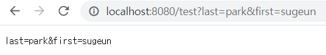
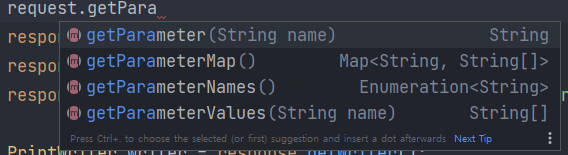
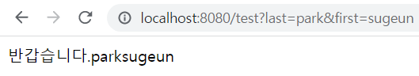

서블릿 예제
학습목표 : 서블릿 클래스를 만들고 요청에 담긴 정보를 확인하고 응답 출력해본다.
Application 클래스 설정
package com.example.servletTest;
import org.springframework.boot.SpringApplication;
import org.springframework.boot.autoconfigure.SpringBootApplication;
import org.springframework.boot.web.servlet.ServletComponentScan;
@ServletComponentScan
@SpringBootApplication
public class ServletTestApplication {
public static void main(String[] args) {
SpringApplication.run(ServletTestApplication.class, args);
}
}
@ServletComponentScan 어노테이션을 추가해준다.
@ServletComponentScan이란?
- SpringBoot 환경에서 basePackages 하위
서블릿컴포넌트(필터, 서블릿, 리스너)를 스캔해서 빈으로 등록한다.
(@ComponentScan과 유사)
각각 서블릿 컴포넌트들은 해당 컴포넌트마다 별도의 어노테이션이 있어야한다
필터 : @WebFilter
서블릿 : @WebServlet
리스너 : @WebListener
Servlet 클래스 생성
doGet 메서드
import javax.servlet.ServletException;
import javax.servlet.annotation.WebServlet;
import javax.servlet.http.HttpServlet;
import javax.servlet.http.HttpServletRequest;
import javax.servlet.http.HttpServletResponse;
import java.io.IOException;
import java.io.PrintWriter;
@WebServlet(name="testServlet", urlPatterns = "/test")
public class TestServlet extends HttpServlet {
@Override
protected void doGet(HttpServletRequest request, HttpServletResponse response) throws ServletException, IOException {
String query = request.getQueryString();
response.setContentType("text/plain");
response.setCharacterEncoding("utf-8");
PrintWriter writer = response.getWriter();
writer.println(query);
}
}
Servlet을 사용하기위해서는 HttpServlet을 상속받아야한다.
HttpServlet 클래스에는 Http 메소드마다 호출되는 메소드가 따로 구분되어 있다.
(doGet,doPost,doPut....)
@WebServlet은 해당 클래스를 서블릿으로 사용할 수 있게 해주는 애노테이션
name 속성으로 서블릿 이름을 지정
urlPattern 속성으로 서블릿에 매핑될 url을 지정해준다.
메소드의 매개변수 HttpServletRequest 인스턴스의 setContentType, setCharacterEncoding 메소드를 통해 출력 타입이나 인코딩을 정할 수 있다.
setHeaders 메소드를 통해 아래와 같이 헤더를 추가할 수도 있다.
response.setHeader("Content-Type","text/plain");
request.getQueryString()을 통해 request parameter에 대한 문자열을 얻을 수 있다.
&까지 포함되어 나오는 듯 하다.

getParameter를 통해 특정 파라미터에 대한 key를 통해 value를 얻을 수 있고
getParameterMap을 통해 Map 형태로 parameter들을 얻을 수 있는 것으로 보인다.

doPost 메서드
HTTP message body는 개발자가 직접 데이터를 담아서 요청하는 방식이다. JSON, XML, TEXT가 주로 사용되는 포맷 형식인데 최근에 들어서는 거진 JSON이 사용된다.
단순 텍스트를 메시지에 담아 전송할 떄는 request의 getInputStream을 통해 stream을 얻고 이를 StreamUtils의 copyToString 메서드를 통해 문자열로 변환할 수 있다.
ServletInputStream inputStream = request.getInputStream();
String requestBody = StreamUtils.copyToString(inputStream, StandardCharsets.UTF_8);
json 타입의 경우 StreamUtil 유틸 클래스로 InputStream을 읽어와서 이를 스프링부트에서 기본으로 제공하는 Jackson 이라는 json 라이브러리를 사용해서 이 값을 객체로 읽어올 수 있다.
ObjectMapper objectMapper = new ObjectMapper();
PrintWriter writer = response.getWriter();
User user = objectMapper.readValue(requestBody,User.class);
writer.println(user.getId());
writer.println(user.getPassword());
User라는 DTO 클래스를 생성해 json 데이터를 자바 오브젝트로 변환하여 얻을 수 있다.
postman을 이용한 결과 화면은 아래와 같다.

HTML로 출력하기
doGet 메서드 실험의 결과를 단순 텍스트가 아닌 html로 출력해보았다.
protected void doGet(HttpServletRequest request, HttpServletResponse response) throws ServletException, IOException {
String firstName = request.getParameter("first");
String lastName = request.getParameter("last");
response.setContentType("text/html");
response.setCharacterEncoding("utf-8");
PrintWriter writer = response.getWriter();
writer.println("<html>");
writer.println("<body>");
writer.println("<div>반갑습니다." + lastName + firstName + "</div>");
writer.println("</body>");
writer.println("</html>");
}

자바 코드 내에서 html 생성할 수 있어 동적으로 html을 생성할 수 있지만
html 태그의 모든 내용을 개발자가 직접 출력 해줘야 한다...
이러한 점을 해결하기 위해 JSP,thymeleaf와 같은 템플릿 엔진이 등장했다.